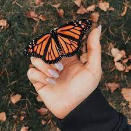

Mariposa
Los lepidópteros, mas conocidos comúnmente como mariposas, son unos insectos pertenecientes al orden de los homometábolos, un grupo de insectos superiores, los cuales, a lo largo de su vida sufren una serie de transformaciones complejas conocida como metamorfosis, y en la que se suceden las fases de embrión, larva, pupa e imago.
Las mariposas son un tipo de insecto muy popular por los llamativos colores que tiñen sus alas y por su vuelo vacilante cuando se acerca el buen tiempo. Se han descrito unas 24.000 especies diferentes.
Las mariposas tienen antenas, ojos, tres pares de patas y alas. En la fase adulta, la mariposa tiene antenas, ojos y tres pares de patas. El cuerpo, cubierto por un duro exoesqueleto, se divide en cabeza, tórax y abdomen.
Las mariposas pasan por un ciclo de vida completo que consta de cuatro etapas: huevo, larva (oruga), pupa (crisálida) y adulto. Durante la etapa de oruga, se alimentan de hojas y experimentan varias mudas hasta que alcanzan la etapa de pupa. En la crisálida, la mariposa se transforma internamente hasta que finalmente emerge como adulto.
Como todos los insectos cuentan con seis patas, dos alas y un cuerpo dividido en tres partes: cabeza, tórax y abdomen.Su boca tiene forma de tubo pues es la herramienta con la que succionan los nutrientes de las plantas para alimentarse a través de una larga lengua enrollada sobre si misma que recibe el nombre de espiritrompa.
La velocidad y potencia del vuelo de las mariposas depende de la especie pero también es afectado por la temperatura y el grado de humedad, ya que adaptan su vuelo a las condiciones ambientales. Las mariposas más rápidas llegan a volar a 50 kilómetros por hora.
Más de 200 especies de mariposas migran durante su corta vida en busca de condiciones climáticas favorables. El caso más importante es el de la Mariposa Monarca que en los Estados Unidos migra hacia el sur y hacia el oeste para escapar del invierno.
La migración se inicia cuando las temperaturas comienzan a bajar, aproximadamente en el mes de octubre. Son un caso único ya que ningún otro insecto realiza una migración tan amplia: recorren una distancia de 2.500 kilómetros.
Las mariposas muestran una amplia diversidad de especies y adaptaciones a diferentes hábitats. Se encuentran en todo el mundo, desde las regiones tropicales hasta los climas más fríos. Algunas especies incluso realizan migraciones masivas a lo largo de grandes distancias.
El hábitat común de estos animales se basa principalmente en regiones tropicales de climas cálidos durante todo o casi todo el año y abundante vegetación, su principal fuente de alimento. Es en los trópicos donde se puede encontrar más número de especies.
Por el contrario, en regiones templadas, el número de especies desciende según aumenta la latitud, siendo escasas las que aguantan temperaturas frías. No obstante, las mariposas están tan diversificadas geográficamente que la Antártida es el único continente donde no se pueden encontrar especies de lepidópteros.
Durante su periodo como orugas, estos insectos devoran casi cualquier materia vegetal gracias a su aparato bucal masticador, como tallos, hojas o flores, aunque también pueden aprovechar ciertos alimentos recolectados y tratados por el ser humano como semillas, granos o harina. Una vez alcanzada la madurez, las mariposas succionan polen, néctar y esporas de hongos mediante su aparato bucal lamedor-chupador, que comúnmente podríamos decir que es la lengua de las mariposas, llamado técnicamente espiritrompa o proboscis en espiral.
